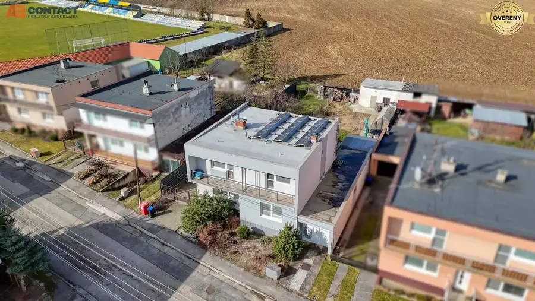
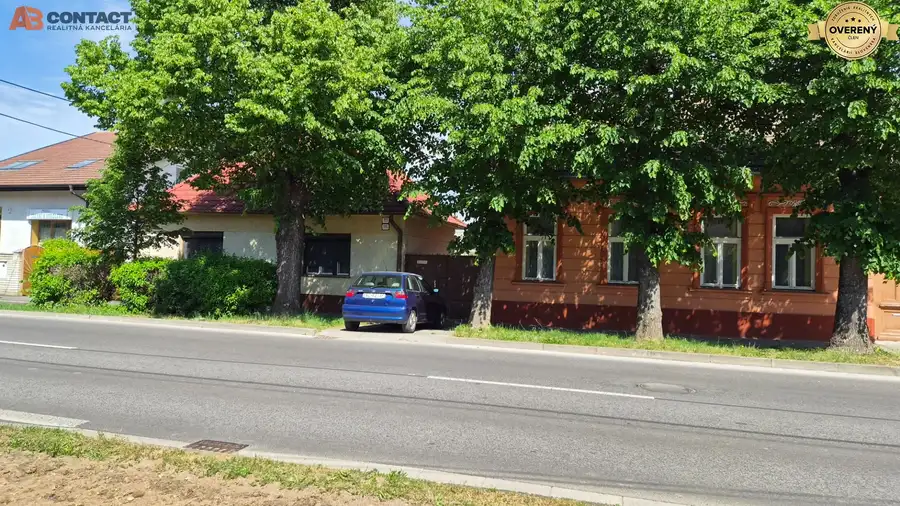
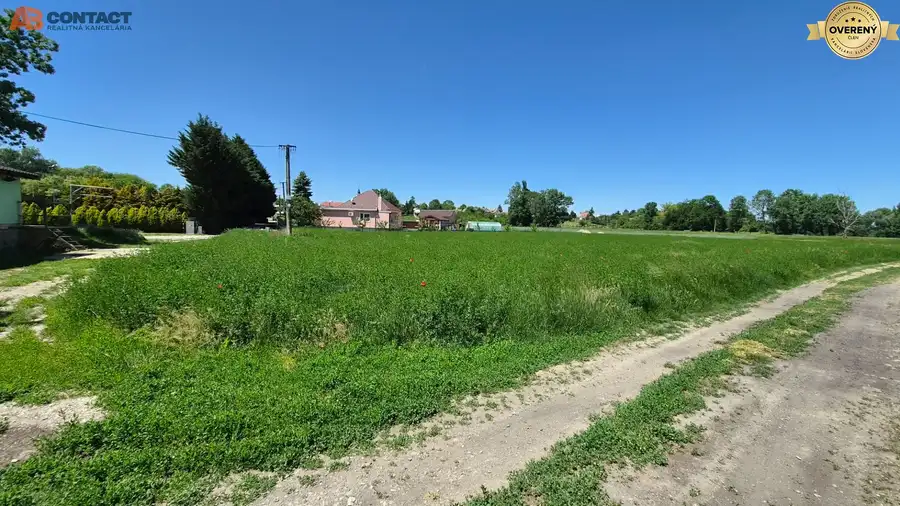

Rodinný dom s garážou v slepej ulici v obci Sokolovce
Sokolovce
- Dispozícia5-izbový
- Plocha120 m²
- Poschodie0. z 1
- Stavčiastočne prerobený
- Vlastníctvoosobné
O nehnuteľnosti
Rodinný dom na Hviezdoslavovej ulici v obci Sokolovce.
Tichá – slepá ulica zaručuje pokojné bývanie.
Dom stojí na pozemku s celkovou výmerou 682 m².
Zastavaná plocha domom 99 m².
Zastavaná plocha garáž so skladom 32 m².
Rodinný dom bol postavený v roku 1960, v roku1976 bolo zčasti zobytnené podkrovie dve izby, neskôr v roku 2006 v podkroví vznikla aj menšia kuchynka a kúpeľňa, čím sa vytvorila samostatná 2-izbová bytová jednotka s externým schodiskom, z interiéru prízemia prístupná domácim výťahom.
Dispozícia:
Prízemie: chodba, obývacia izba, spálňa, detská izba, kuchyňa, kúpeľňa s wc, komora.
Podkrovie: chodba, 2 izby, kuchynský kút, kúpeľňa so sprchovým kútom.
Suterén: sklad, technická miestnosť.
Základný materiál domu je kváder a tehla, okná a vstupné dvere sú plastové, strecha zrekonštruovaná, strešná krytina škridla. Podlahy sú betónové pokryté dlažbou, obývacia izba a spálňa prízemia zachovalé drevené parkety. Podkrovie betónový poter v kombinácii dlažba a plávajúca podlaha, koberec.
Vykurovanie prízemie je prostredníctvom plynového kotla umiestneného v suteréne. Ohrev vody zabezpečuje el. zásobník. Podkrovie je vykurované el. ohrievačmi, teplú vodu zabezpečuje el. zásobník.
Na pozemku sa nachádza garáž pre jedno auto so skladom a murovaná pivnica na ovocie a zeleninu. Pred garážou je ďalší priestor pre vonkajšie parkovanie na vlastnom pozemku. V zadnej časti pozemku sa nachádza drevený altánok.
Vstupná šírka pozemku 20 metrov. Zadná šírka pozemku 13 metrov. Dĺžka pozemku v severnom ramene 38 metrov, v južnom ramene 30 metrov.
Rekonštrukcie:
- v roku 1976 – drevené parkety 2 izbách na prízemí
- v roku 1976 – vybudovali sa dve izby v podkroví
- v roku 2002 - oprava krovu, nová strecha, vonkajšie schodisko
- v roku 2006 – podkrovná kuchynka a kúpeľňa
- v roku 2007 - výmena plynového kotla Buderus
- v roku 2012 – plastové okná a dvere
- v roku 2026 – vonkajší náter fasády
Orientácia:
- východ – kuchyňa, kúpeľňa s toaletou
- západ – obývacia izba a spálňa
- juh – detská izba
Dom je napojený na vodu, elektrinu, plyn, odkanalizovaný do vlastnej žumpy.
V prípade otázok nás neváhajte kontaktovať.
Parametre
| Rozloha pozemku | 682 m² |
|---|---|
| Zastavaná plocha | 99 m² |
| Celková rozloha | 152 m² |
| Úžitková plocha | 120 m² |
| Poschodie | prízemie |
| Počet poschodí | 1 |
| Počet izieb | 5 |
| Vlastníctvo | osobné |
| Stav | čiastočne prerobený |
| Voda | verejný vodovod |
| El. napätie | 230/400V |
| Plyn | áno |
| Kanalizácia | žumpa |
| Kúpeľňa | vaňa a sprchovací kút |
| Vykurovanie | vlastné - plyn |
| Terasa | áno |
| Pivnica | áno |
| Garáž | áno |
| Postavené z | iné |
| Zateplený objekt | nie |
| Strecha | po rekonštrukcii |
| Predzáhradka | áno |
| Bezbariérový prístup | nie |
| Okná | plastové |
| Terén | rovina |
| Prístupová cesta | asfaltová cesta |
| Dátum zverejnenia | 9. 9. 2026 |
Kde to je
Mohlo by Vás zaujímať

Rodinné domy10 280 000 €Priestranný rodinný dom Športová ulica, Moravany nad Váhom Moravany nad Váhom 7-izbový230 m² Hľadáte priestor, kde sa zmestia všetci a všetko? Dom s neobmedzenými možnosťami - dostatok izieb pre deti, priestor pre budúce domáce fitness alebo…
Rodinné domy10 270 000 €Pôvodný rodinný dom na 604 m² v centre mesta Senec Senec 3-izbový150 m² Zo Senca sa stáva dynamické predmestie Bratislavy plné mladých pracujúcich ľudí a mladých rodín. Mesto na tento trend reaguje rozširovaním…
Pozemok10 69 000 €Stavebný pozemok v pokojnej časti obce Veselé Veselé 750 m² Podľa charakteru územia a riešenia územného plánu obce je momentálne tento pozemok určený na výstavbu rodinného domu s umiestnením do juhovýchodnej…